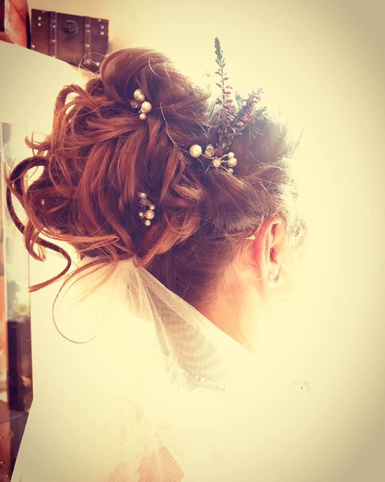
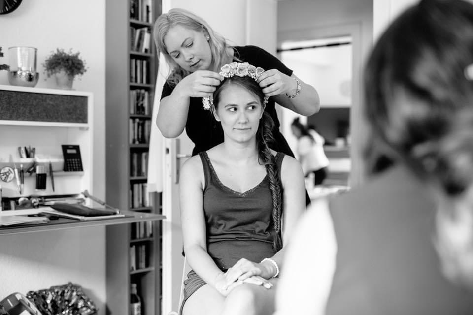
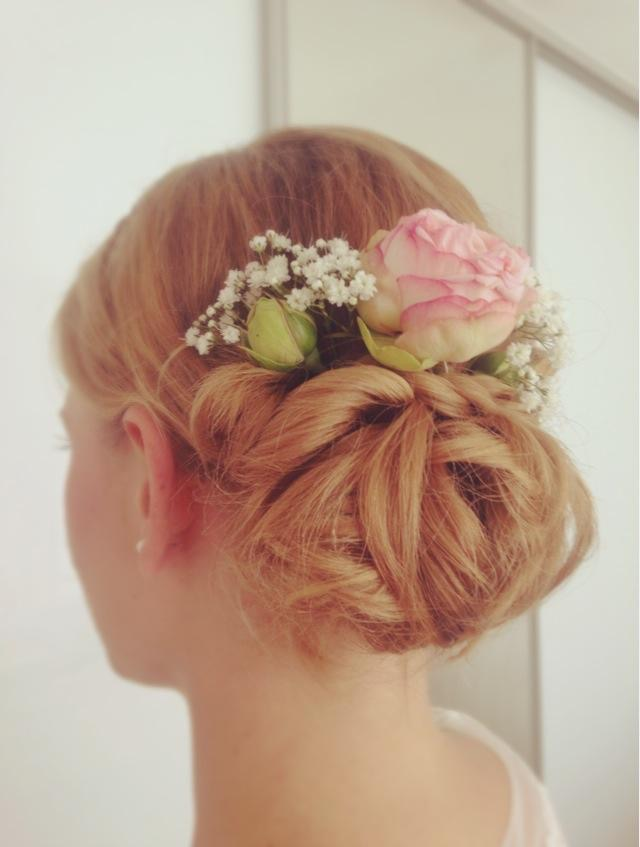

Wie gefällt Dir das?







Ich bin Maskenbildnerin mit Leib und Seele und ganz besonders liegt mir das Brautstyling am Herzen. Ich werde Dir an deinem großen Tag mit viel Geduld, Professionalität und einer riesigen Portion Liebe zur Seite stehen und Dich in eine wunderschöne Braut verzaubern.

Vielen Dank für das wundervolle Braut Make-up und die tolle Frisur an meiner Hochzeit. Es war, als ob ich einen schönen Vormittag mit einer guten Freundin verbringe. Es hat mir gut gefallen hat, dass du auf meine Wünsche eingegangen bist und mir die Möglichkeit gegeben hast, verschiedenes auszuprobieren.

Am Tag aller Tage möchte man sich wohlfühlen, sich um nichts mehr großartig kümmern und den Tag einfach genießen. Sonja hat mit ihrer sympathischen Art, ihrer Kreativität und ihrem Einfühlungsvermögen genau dazu beigetragen und ich habe von allen Seiten nur Komplimente bekommen. Nicht nur professionell, sondern auch menschlich gesehen aufgrund ihrer sympathischen und beruhigenden Art eine Bereicherung für jede Braut.

Es hat mir riesen Spaß gemacht, mich in deine Hände zu geben. Auch als Frau, die nicht viel von „aufbrezeln“ versteht, hast du mir ein kleines Tränchen ins Gesicht gezaubert. Am Morgen der Hochzeit war ich gar nicht nervös, weil du mit mir über Gott & die Welt gequasselt hast. Wenn Brautstyling, dann nur von Sonja. ♥️
Ich bin Sonja Gast, staatlich geprüfte Maskenbildnerin und durch die vorherige Friseurausbildung und Kosmetikschule mit insgesamt 9 Jahren Ausbildung an geballtem Fachwissen und Können ausgestattet. Seit über 15 Jahren bin ich schon in der Hochzeitsbranche tätig. Wenn ich mal keine Bräute verschönere, arbeite ich für Theaterproduktionen und bei Film & Fernsehen.